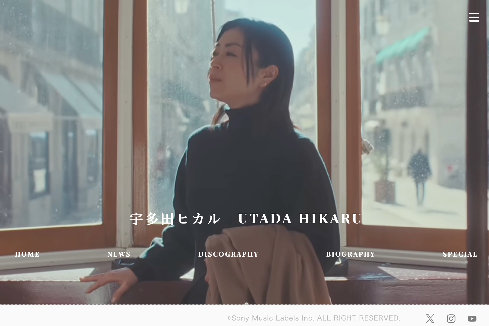
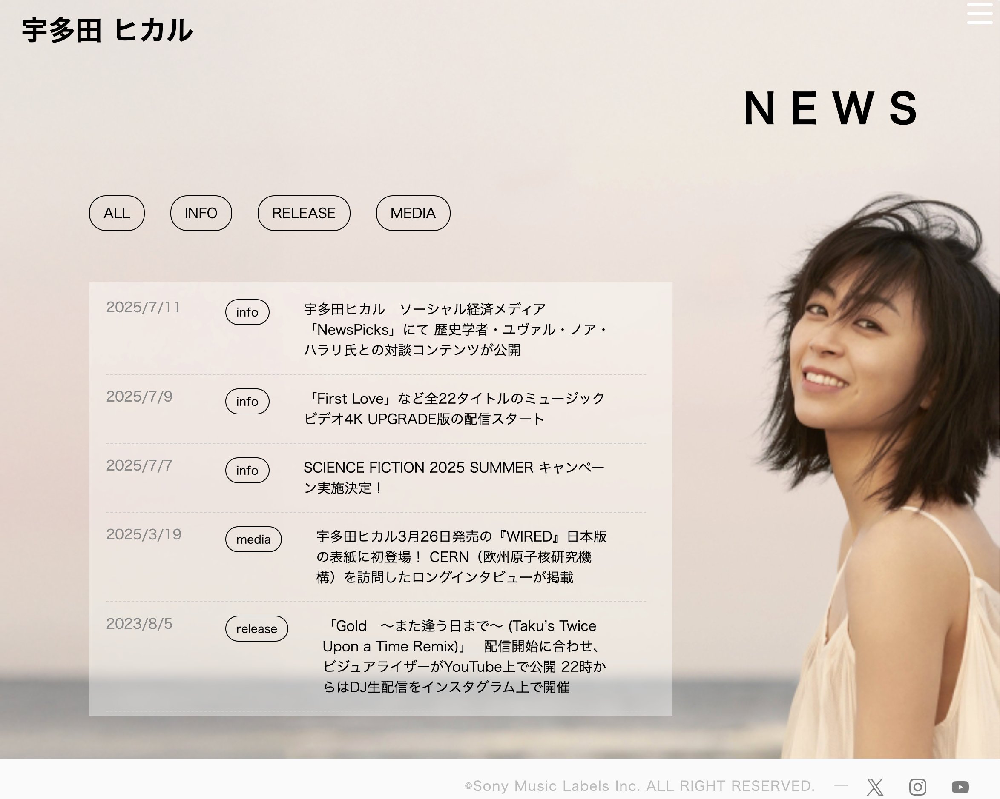
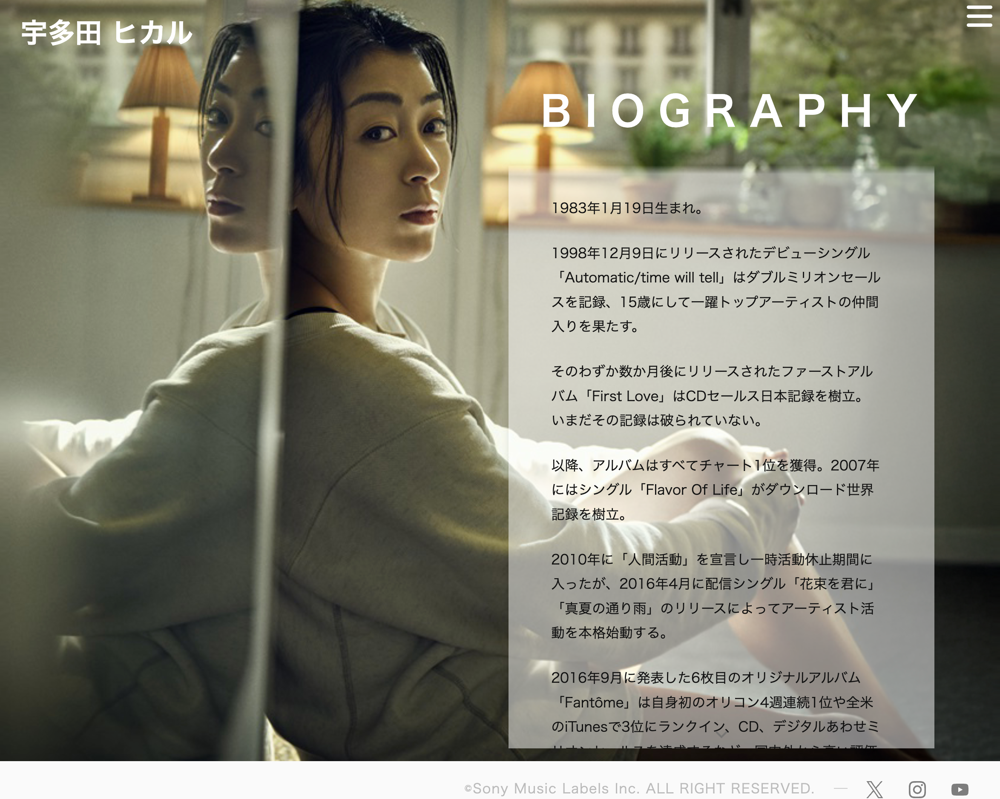
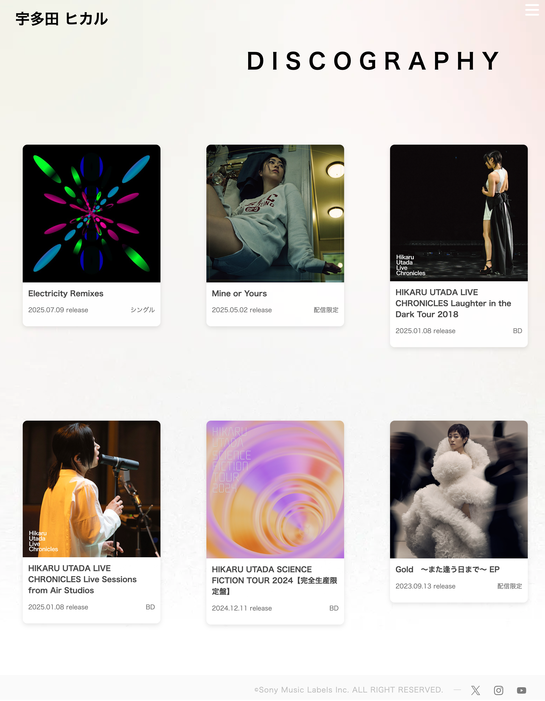

制作概要Outline
本プロジェクトでは、アーティストの魅力を伝える非公式ファンサイトを企画・制作しました。情報設計からビジュアル表現まで一貫したデザインを心がけ、質の高いコンテンツを読みやすいUIで届けることを目指しています。
宇多田ヒカルさんの楽曲・活動に興味を持つファン、およびこれから知りたい方。年齢層は幅広く、デバイスはPC・スマートフォン両方で閲覧されることを想定しています。
公式サイトとは異なる「ファン目線」での情報整理と、ニュース・ディスコグラフィー・バイオグラフィーなどを一覧しやすい構成にすること。
学校課題として、企画からコーディングまで一通り担当し、Webデザインと実装の両方を習得する。Figmaでワイヤー・デザインを行い、HTML/CSS/JSで実装しました。
内容詳細Detail
アーティストの世界観を伝える全画面ビジュアル

トップページでは、アーティストのイメージを印象的に伝えるため、写真映像を全画面でループ再生する構成としました。視覚的なインパクトを重視し、サイト訪問時に強い印象を残すことを狙っています。
メインナビゲーションとハンバーガーメニューを併用し、デバイスや利用状況に応じた操作性を確保しました。特にモバイル端末では、限られた画面サイズでも快適に閲覧できるよう、ハンバーガーメニューによる情報整理を行っています。
また、ナビゲーションはシンプルで分かりやすい構造とし、音楽業界のサイトに必要な情報の整理を意識した名称設計を行いました。
写真を背景にした統一感のあるページデザイン

ニュースは内容ごとにカテゴリー分けし、ファンが必要な情報を分かりやすく確認できる構成としました。

テキスト量の多いプロフィールページでは、単調な印象にならないようアーティストの写真を背景に使用し、文字を重ねることで視覚的な魅力と読みやすさを両立させました。
作品情報を直感的に把握できるカード型レイアウト

ディスコグラフィーページでは、シンプルで洗練されたカード型レイアウトを採用し、作品情報を直感的に把握できる構成としました。
各アルバム／シングルのカードは詳細ページへ遷移するリンクとして設計し、クリックすることで作品の背景や収録内容を詳しく閲覧できるようにしました。